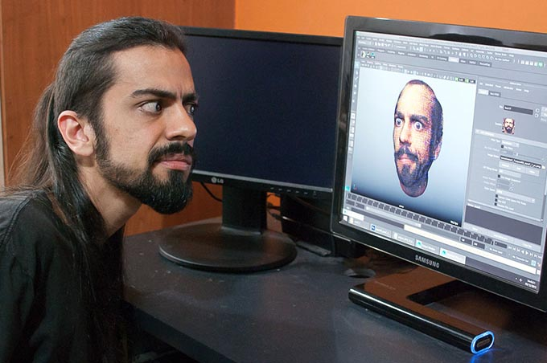

...by unexpected things coming to life.
As a kid, it started with plushies talking and toy cars moving on its own.
Then there were magic boxes for everything:
One would spin dirty clothes, another would spin plates of food.
Some could play games. One was supposed to print stuff but would only chew paper up.
My favorite one, though, was the one that displayed moving images.
It really amazed me.
Because those images... they meant something.
Something that looked alive. That felt alive.
Like watching life but not quite the same.
Like... a mirror to a different reality.
Now fast forward a couple of decades...
I studied electrical engineering, to try to understand how things could seem to be alive.
I then studied animation, still trying to understand how things could seem to be alive.
I learned that technologies allow us to break out of limitations.
That good technical solutions give creativity room to flourish.
And that creativity open ways for better solutions.
I work between those two worlds.

I design solutions so systems can be efficient, so no one has to invest time on boring tasks.
I like to let the computer do what it does best so we people can do what is so exclusive to us: telling stories.
"The soul of any kind of a creative artform is... freedom!"
-Glen Keane
To this day I still study everything I can put my hands on.
I call myself an artist, because I believe art lives in everything done with passion.
I'm constantly trying to breath life into unusual things.
Because it reminds me that being alive is extraordinary.
Like when we stumble upon something so unique that we are left...
...completely mesmerized.
Those are the moments that stand out, the ones we remember.
Life, you see, can be quite inspiring.
I study life.
So I can inspire others.